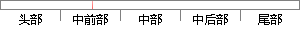

下面将各个功能的基本业务流程作简要说明：
片段位置图

相似结果|
相似片段 1：。5．2．2业务流程和数据模型1．业务流程首先要说明的是，这里主要讨论的是本系统后台各项功能的业务流程。对于中国联通综合营帐系统的各个子系统而言，它们的后台业务流程基本相似，如图5．1所示。图5．1基本业务
相似片段 2：下面将以创建新项目功能为例，简要说明产品及需求管理功能的业务流程。测试计划管理其主要包括测试计划管理、版本管理、用户角色指派以及里程碑管理，下面将以创建测试计划功能为例，简要说明测试计划管理功能
相似片段 3：看。下面将以项目跟踪功能为例，简要说明项目实施管理功能的业务流程。具体的业务流程操作如图2．4所示。9图2．4项目跟踪业务流程活动图用户在想要了解项目的完成度时可以对项目展开跟踪，在确定所要跟踪的项目
|
※ 片段修改建议 ※
近似词参考：- 功能：功效
- 基本：根基 根本
- 简要：扼要
- 说明：申明 阐明
系统自动生成语句：下面将各个功效的根基业务流程作扼要申明：
注：本片段修改建议为系统自动生成，仅供参考。